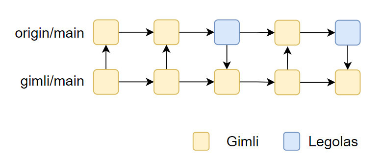
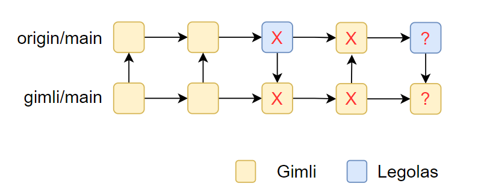
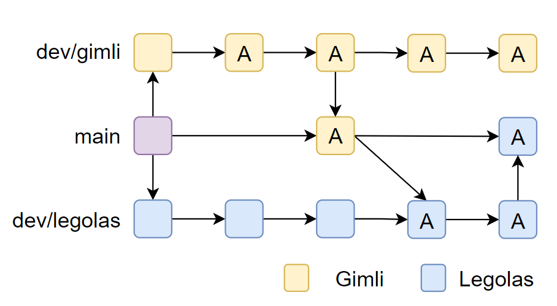
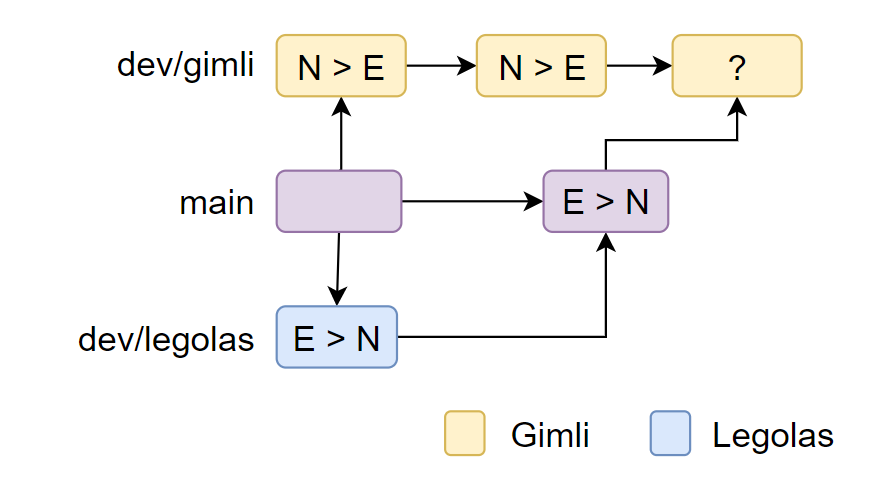
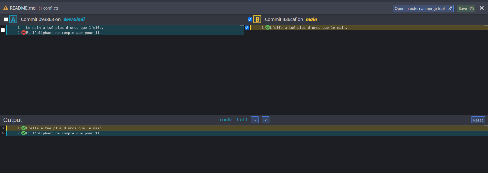

GIT
Qu'est-ce que Git ?
C'est un système de contrôle de version distribué libre et public.
Pourquoi gittons-nous ?
- Gérer les différentes versions d'un même système
- Faciliter la publication d'outils libres
- Permettre à chaque développeur de travailler indépendamment sur leur version du système
Serveur et clients Git
Généralement, un serveur est utilisé pour permettre aux utilisateurs de partager leurs versions du système.
Le serveur est partagé par tous les intervenants au projet. Principaux service de serveurs Git :
- Git Hub
- Git Hub Classroom
- Bitbucket (Atlassian)
- GitLab
Chaque intervenant doit avoir le logiciel Git installer et peut le manipuler par le biais d'un client (interface humain - logiciel).
Les principaux clients sont : - Git Bash (console) - Git Kraken (GUI - indépendant) - Git Hub Desktop (GUI - Git Hub) - Source Tree (GUI - Atlassian) - SmartGit (GUI - indépendant)
Chaque intervenant peut avoir un client différent.
Installer Git
- Télécharger Git https://git-scm.com/
- [Optionnel] Installer un client ou utiliser Git Bash
- Créer un compte sur le site web d'un serveur Git
Le dépôt local
Un dépôt git (repo) représente un projet dont le versionnage est géré par Git.
Manipuler le dépôt local
Chaque version du système est appelée commit. Chaque commit est identifié de façon unique par un hash généré automatiquement.
Avant de créer un commit on doit sélectionner quel fichier inclure dans le commit. Pour connaître l'ensemble des fichiers modifiés depuis le dernier commit :
Pour ajouter un ou plusieurs fichiers manuellement :
Pour ajouter tous les fichiers créés, modifiés ou supprimés depuis le dernier commit :Une fois ajoutés, les fichiers passent dans l'état staged. Tous les fichiers staged seront inclus dans le prochain commit dans l'état où ils seront lors du commit.
Chaque commit doit être accompagné d'une description significative.
À l'aide, j'ai fait une erreur dans mon commit !
Ça arrive. La solution la plus simple et celle à mettre en oeuvre 99% du temps est de modifier le projet et refaire un nouveau commit.
Il existe une façon de modifier le dernier commit, nous y reviendrons plus tard.
Retourner sur la dernière version stable
Vous avez fait des changements qui incluent plein de bogues et vous souhaitez repartir du point où ça fonctionnait. La commande reset permet de revenir dans l'état du dernier commit et détruire les changements faits depuis le commit.
Lier le local et le distant
Le serveur distant présente une copie centralisée du dépôt. La mise à jour entre le dépôt local et le dépôt distance se fait de façon manuelle.
Pour copier la version distante sur le local, on utilise la commande fetch.
On a alors 2 copies du même dépôt, l'une représentant le local (identifiée par main), l'autre représentant le distant (identifiée par origin/main).
On va devoir fusionner l'information du distant avec celle du local. On parle alors de merge.
Du 2 en 1
Le fetch suivi d'un merge avec le distant est une opération très fréquente dans Git. Alors, les développeurs ont introduit une instruction qui exécute d'abord un fetch puis un merge : le pull.
Publier sur le dépôt distant
Avant de publier sur le dépôt distant, il faut indiquer lier la branche du main local avec le main distant. Le distant porte (par convention) le nom origin.
L'opération de publication s'appelle push. Un push copie la version locale vers le serveur distant. Seuls les changements dans un commit sont copiés.
Le distant ne fait pas de merge, donc le local doit inclure la dernière version du distant (aka : toujours pull avant de push).
Le premier push
Lors du premier push, git ne sait pas comment faire correspondre le local et le distant. Il faut alors le lui indiquer.
Cette opération est nécessaire que lors du le premier push.
Si vous utilisez un client GUI, il n'y a généralement pas de différence entre le premier push et les autres.
Maintenant vos collaborateurs ont accès à vos modifications !
Le distant en premier
Si un dépôt distant existe déjà et que vous voulez en faire une copie pour travailler en local (après tout, une seule personne par équipe crée le projet Git), il faut utiliser la commande suivante.
Il vous sera demandé alors de vous identifier. L'identification diffère selon le client et le serveur distant utilisé.
Récapitulatif
| Opération | Commande |
|---|---|
| Initialiser | git init |
| Cloner un distant sur ma machine | git clone |
| Ajouter une modification | git add |
| Faire un commit | git commit |
| Récupérer la version du distant | git pull |
| Publier une version vers le distant | git push |
Il était une fois les branches
Imaginons que 2 programmeurs, Gimli et Legolas, travaillent sur le même projet et que les 2 utilisent la branche main.

Legolas maintenant publie un bogue dans son premier push.

Isoler les modifications
Il serait intéressant d'avoir des versions parallèles en cours de développement et une version stable qui inclut les fonctionnalités terminées et testées.
Une branche permet de gérer des versions parallèles. À chaque branche il sera associé un rôle.
Pour lister les branches du dépôt.
Créer une branche
Pour ajouter une branche sur le depôt local :
Le nom des branches doit être composé de caractères alphanumériques, ne pas commencer par -, ne pas contenir de .. et ne pas terminer par /
La création d'une branche copie l'état actuel de la branche et nous déplace sur la nouvelle branche.
Chaque branche possède un pointeur de tête HEAD qui nous permet de se positionner.
Propagation des changements

Se promener de branches en branches
Pour changer de branche, on utilise la commande checkout.
Attention, on ne peut pas changer de branche s'il y a des changements qui ne sont pas commités. Si cela arrive, il y a trois options : - Faire un commit - Effacer les changements (git reset --hard) - Utiliser la stash (vous irez lire là-dessus)
Fusionner des branches
Pour amener les modifications faites à une branche sur une autre branche (ex. fusionner les versions de deux équipiers), on effectue un merge.
Quand créer une branche ?
Chaque branche répond à un besoin particulier. Ces besoins sont : - Versionnage du système (version développement, stable, publiée (dev, main, release)) - Correction d'erreurs mineures (hotfix) - Développement de nouvelles fonctionnalités (features/...)
Projet scolaire
Pour un projet scolaire, vous devriez minimalement avoir une branche principale (que vous gardez propre) et une branche par personne pour vos fonctionnalités (qui elle sera moins propre...).
Les conflits
Dans le fichier readme.md de leur dépôt git, Legolas inscrit "L'elfe a tué plus d'orques que le nain". En même temps (fort de sa propre version), Gimli inscrit "Le nain a tué plus d'orques que l'elfe".
Legolas publie en premier ses modifications, donc Gimli doit d'abord récupérer les modifications de Legolas avant de pouvoir merger sa branche locale.

Quand un conflit se produit-il ?
Un conflit se produit lorsqu'un emplacement dans un fichier a été modifié sur deux branches différentes. À la fusion des branches, Git ne peut pas déterminer quelle est la bonne version.
La résolution de conflit consiste alors à indiquer à Git quelle sera la bonne version à conserver.
Il est impossible de procéder au merge tant que tous les conflits ne sont pas réglés.
Apprendre à résoudre ses conflits
Sans outil externe de résolution de conflit, 3 options s'offrent à nous pour résoudre les conflits :
- Forcer Git à prendre TOUTES les modifications de la branche en cours (notre version --ours)
- Forcer Git à conserver TOUTES les modifications de la branche fusionnée (leur version --theirs)
- Résoudre manuellement chaque endroit ou un conflit se produit
Évidemment, la troisième option sera celle à utiliser le plus souvent
Identification des conflits
Les conflits seront marqués de la façon suivante dans le fichier impliqué.
<<<<<<< HEAD:file.txt
Version locale du fichier
=======
Version distante du fichier
>>>>>>> hash du commit mergé:file.txt
Concrètement, Gimli voit ceci :
<<<<<<< HEAD:readme.md
Le nain a tué plus d'orques que l'elfe (Ce que Gimli a écrit)
=======
L'elfe a tué plus d'orques que le nain (Ce que Legolas a écrit et qui est sur le main)
>>>>>>> 77976da35a11db4580b80ae27e8d65caf5208086:readme.md
Résolution du conflit
Sans logiciel de résolution de conflit, le merge avec la 3e option provoque un commit sur la branche locale avec les marques de conflit.
Gimli doit alors ouvrir chaque fichier et traiter les marques (c.-à-d. supprimer les caractères et l'une des deux versions).
Plusieurs IDE / Éditeur de texte supportent l'édition de conflit
Résolution de conflit dans VSCode

Git Kraken
Plusieurs clients GUI Git incluent un outil de résolution des conflits. Sinon certains logiciels spécialisés en résolution des conflits (P4Merge) peuvent être utilisés.

Ignorez-moi SVP
Certains fichiers ne devraient pas être partagés, car chaque utilisateur doit en avoir une version différente ou tout simplement ils ne sont pas pertinents à partager.
Type de fichiers à ne pas partager :
- Fichiers de configuration de projet : .sln, .gitignore, .idea...
- Fichiers dérivés : /bin, /obj ...
Pourquoi ?
Par exemple, un fichier de configuration contenant le chemin du projet ne devrait pas être partagé, car chaque utilisateur aura un chemin différent sur sa machine.
Le .gitignore
Un fichier nommé ".gitignore" contient tous les fichiers et répertoires devant être ignorés par git.
Ignorer par Git signifie que la commande git add --all n'inclut pas ces fichiers.
On peut placer plusieurs .gitignore dans notre projet. Chaque fichier est lu et les informations sont marquées pour être ignorées.
Le .gitignore contient des informations par chemin relatif.
Générer un gitignore
La plupart des clients inclut un outil pour générer automatiquement un .gitignore basé sur un modèle indiqué à la création du projet (ex. Visual Studio ou Unity...).
Le modèle généré ignore les fichiers et dossiers standards du projet (pas vos personnalisations). Il doit être placé à la racine du projet. Tous les chemins sont relatifs au .gitignore.
Le site web https://gitignore.io permet aussi de générer des modèles de git ignore.
Un exemple de gitignore
# Created by https://www.toptal.com/developers/gitignore/api/visualstudiocode
# Edit at https://www.toptal.com/developers/gitignore?templates=visualstudiocode
### VisualStudioCode ###
.vscode/*
!.vscode/settings.json
!.vscode/tasks.json
!.vscode/launch.json
!.vscode/extensions.json
*.code-workspace
# Local History for Visual Studio Code
.history/
...
"Mon .gitignore est brisé, il ajoute des fichiers qui devraient être ignorés."
Votre .gitignore fonctionne très bien. Voici deux erreurs (code 12) férquentes avec le .gitignore :
- Erreur de chemin : les chemins sont relatifs au fichier .gitignore (et non au dépôt Git)
- Erreur de tracking : votre fichier a déjà été suivi par Git
Le tracking
Quand on ajoute pour la première fois un fichier à un dépôt git, Git commence à le suivre (tracking). Si un fichier est déjà suivi par Git, il continuera de le suivre même si un gitignore est ajouté et devrait empêcher ce fichier d'être inclut.
Pourquoi le tracking ?
Cela nous évite d'avoir à écrire une exception dans le .gitignore pour chaque fichier que nous voudrions suivre et qui tombe sous une règle du .gitignore.
Enlever un fichier de l'index suivi
Pour dire à Git d'arrêter de suivre un fichier on utilise la commande suivante.
Attention, bien que le fichier demeure sur le local de votre machine, lors du prochain pull, les autres utilisateurs verront ce fichier être supprimé de leur machine.
Cette commande enlève tous les fichiers suivis.
Ajouter un .gitignore sur le tard
La séquence pour ajouter un .gitignore sur un projet qui est déjà créé est la suivante.
Et voilà, votre .gitignore fonctionne !
Effet de bord
Il s'agit quand même d'une solution agressive sur votre dépôt.
Si vous aviez besoin de suivre un fichier en particulier, vous devrez le rajouter, car le git add --all ne le fera pas.
Petits trucs avec Git
- Ce n'est pas un gestionnaire de sauvegarde. Un dépôt "planté" peut être très difficile à récupérer. Faites des sauvegardes.
- Parlez-vous sur l'utilisation de git. Si une seule personne fait des branches, elle va trouver le temps long.
- Commiter souvent, merger rarement. Les commits locaux ne coutent rien et vous permettent de revenir dans un état stable en cas d'ajout de code fautif.
- Utilisez git dès le début du projet.
- Éviter d'utiliser l'option --force surtout si vous ne savez pas ce que vous faites. Cela peut briser votre dépôt.
- Évitez les commandes rebase, amend ou squash si vous n'êtes pas sûr de ce que vous faites.
Aller plus loin
- GitFlow : structurer votre flux de travail
- Commandes : rebase, amend ou squash. Puissantes, mais dangereuses dans certains contextes.
- Pull-request : demander une validation
- Git-secret : évite de partager certaines informations (comme un mot de passe de BD ou une clé pour les services Google)